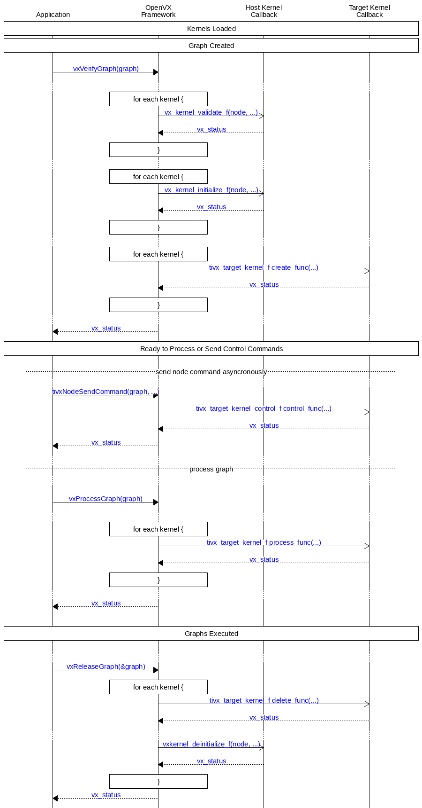

User Kernels
The OpenVX specification describes how users can plugin their own kernels (which are only executed on the host core) into OpenVX. TIOVX supports this feature, so for more details on this topic, please refer to the following section from the spec directly: Framework: User Kernels
User Target Kernels
Since the OpenVX specification only supports host-side user kernels, TI has created its own vendor extension which adds support for users to add kernels on other targets in the system. The API for this extension is: Target Kernel APIs
This extension tried to preserve the pattern from the OpenVX spec as much as possible. In fact, on the host cpu, the same apis are used to add a user kernel, except the kernel processing callback should be set to NULL (since the callback is not located on the host core).
Then, on the target side, the tivxAddTargetKernelByName function is called to register the target-side callbacks:
- process_func: Main processing function which is called each time the graph is executed.
- create_func: Called during graph verification, to perform any local memory setup or one-time configuration.
- delete_func: Called during graph release, to release local memory or tear-down any local setup.
- control_func: Can optionally be called asyncronously via tivxNodeSendCommand from the application.
The following call sequence shows the relative interaction between the host application and the target kernel callbacks:

Call sequence of a Graph Verify and Release with User Target Kernels.
Callback Implementation Guidelines
When a framework includes user callbacks, there are usually assumptions that the framework makes about how those callbacks are implemented. TIOVX is no exception. The following list contains guidelines and assumptions that User Target Kernel callback implementers should follow for proper usage:
- create_func:
- Thread/blocking Implications: The vxVerifyGraph function is a blocking function which runs to completion before returning. It calls the create_func callback for each node one by one (sequentially) and then doesn't return until all node create function callbacks return. Therefore, the following guidelines should be followed:
- Do not assume some dependency on another node's create function since it may not have executed yet in the sequence of calls to each node.
- Do not assume some dependency on some action that the application does after returning from vxVerifyGraph. For example, a blocking call called from within the create_func will result in blocking the full vxVerifyGraph, potentially causing a deadlock if the create_func is waiting for further action from the same thread in the application which called vxVerifyGraph, or from another node's create function.
- Memory Implications: If there is some context which needs to be accessed for the other target-side callbacks, it should be created in the create_func since memory allocations are not allowed in any callback except the create_func callback.
- The context pointer can be allocated using tivxMemAlloc. The following is an example of the allocation of the
tivxCannyParams data structure context:
- The allocated context needs to be added to the kernel instance using the tivxSetTargetKernelInstanceContext function (so the other callbacks can retrieve it):
- If the node instance needs additional scratch or persistent memory, memory can be "allocated" in the create_func callback using the tivxMemAlloc function. Then the corresponding pointers and sizes can be added to the context structure. For persistent memory allocations, allocation can be made out of TIVX_MEM_EXTERNAL, for scratch memory, it can made out of TIVX_MEM_EXTERNAL_SCRATCH.
- If allocating out of scratch memory, the following function should be called for each node before any scratch allocations are made:
- process_func:
- Thread/blocking Implications: The process_func callback is called for each node in order of graph dependency, and each target is executing in its own thread. Therefore, for each target, the node process functions are queued up in order of arrival at each target, and are executed to completion before starting the next node process function queued up for that specific target. Nodes running on different targets can execute in parallel. Therefore, the following guidelines should be followed:
- If no target is assigned by the application, the framework statically assigns it to a target in which it is implemented for. The framework does not automatically optimize node target assignments in the graph to run in parallel on another target. This optimization is left to the application writer. For example, if a kernel is implemented on the C66 DSP, and the platform support 2 C66 DSP targets, then the framework will assign both of them to run on TIVX_TARGET_DSP1 sequentially. If the graph is written is such a way that these can be run in parallel or pipelined across both DSPs, then the application can call vxSetNodeTarget for each of the nodes to run on a different target.
- Memory Implications: No memory allocations should happen in the process_func callback. Any memory allocations should have been created in the create_func (see above).
- If there is some context which needs to be accessed/updated from the create_func callback, it can be retrieved from the kernel instance using the tivxGetTargetKernelInstanceContext function:
- control_func:
- Thread/blocking Implications: The control_func callback (if implemented) is triggered from the application by calling tivxNodeSendCommand. The call to tivxNodeSendCommand is blocked until the target can complete execution of the corresponding control_func callback. Note that each target has a pending command queue. If, during the processing of a graph, a target has multiple process_func and control_func commands in flight at the same time, they are serialized on a FIFO (first in first out) order to each target's command queue, and each one is executed in order. This guarantees the thread safe behavior of process_func and control_func commands within each target, but has implications on how long the corresponding call to tivxNodeSendCommand may be blocked. Therefore, the following guidelines shall be followed:
- The calling thread will be blocked until the control_func can be executed on the command queue for the target, and returns, so consider this in the implementation of the callback.
- Since the call is made asynchronous to the process_func, there is no guarantee on the order or exact time the command will get executed (i.e. it could get executed a few frames after it was called depending on the instantaneous depth of the command queue for this target).
- Memory Implications: No memory allocations should happen in the control_func callback. Any memory allocations should have been created in the create_func (see above).
- If there is some context which needs to be accessed/updated from the create_func callback, it can be retrieved from the kernel instance using the tivxGetTargetKernelInstanceContext function:
- The control_func callback (if implemented) should only be called after vxVerifyGraph and before vxReleaseGraph, since it may need to access the kernel instance context, which only exists in the time between these two calls.
- delete_func:
- Thread/blocking Implications: The vxReleaseGraph function is a blocking function which runs to completion before returning. It calls the delete_func callback for each node one by one (sequentially) and then doesn't return until all node delete function callbacks return. Therefore, the following guidelines shall be followed:
- Do not assume some dependency on another node's delete function since it may not have executed yet in the sequence of calls to each node.
- Do not assume some dependency on some action that the application does after returning from vxReleaseGraph. For example, a blocking call called from within the delete_func will result in blocking the full vxReleaseGraph, potentially causing a deadlock if the delete_func is waiting for further action from the same thread in the application which called vxReleaseGraph, or from another node's create function.
- Memory Implications: All memory buffers allocated during the create_func should be freed in the destroy_func
- If there is some context which was allocated in the create_func callback, it can be retrieved from the kernel instance using the tivxGetTargetKernelInstanceContext function:
- If the node instance context included pointers/sizes to additional scratch or persistent memory allocated in the create_func callback, should be freed in the destroy_func callback using the tivxMemFree function.
- Finally, the allocated context needs to be freed from the kernel instance using the tivxMemFree function:
Kernel Module Integration Guidelines
In order to integrate a kernel as a node into an OpenVX graph, the callbacks of the kernel must be registered with the framework. The OpenVX spec defines how user kernels are to be registered, specifically using the vxLoadKernels() API. This registration of kernels comes as a registration of an entire module of kernels that have a common function. For instance, the OpenVX standard kernels are contained within a single kernel module. OpenVX modules can be enabled or disabled depending on whether or not the kernels within that module need to be included in an application. By excluding the modules that are not used, this saves code size and memory.
In the case of a user target kernel, an additional registration must be performed on the target rather than simply registering the kernel module on the host. This is due to the fact that target kernels contain two sets of callbacks, one set on the host and one set on the remote target core as described in the section above. Therefore, each of these kernel registrations must occur on the core where the callbacks will be invoked.
As mentioned, these invocations will occur in two places. First, the host callbacks may be invoked directly from the application. For instance, when one of the Hardware Accelerator (HWA) kernels are to be used in an application, the tivxHwaLoadKernels() must be called prior to the instantiation of any HWA nodes in an application. tivxHwaUnLoadKernels() must also be called during application deinitialization. These API's are wrapper API's for the vxLoadKernels() and vxUnloadKernels() API's. Similarly, any new kernel module must have an equivalent kernel module loading and unloading done from the application.
Second, the target side callbacks must also be registered on the appropriate core that the kernel module in question is intended to be run on. If integrating a kernel module in vision_apps, this kernel registration can be done as a part of the appRegisterOpenVXTargetKernels() in the file vision_apps/apps/basic_demos/app_rtos/common/app_init.c. This init code is common to all cores, so it is recommended to add build macros around the kernel registration in order to only allow it to register on the intended cores. As an example, the TIDL kernel module running on the C7x is registered by adding the tivxRegisterTIDLTargetKernels() to the appRegisterOpenVXTargetKernels() with build macros around the call to guarantee that it only registers on the C7x.
The PyTIOVX tool can be used by a kernel developer to generate much of this boilerplate kernel registration code with a simple Python script. For more information about the PyTIOVX tool, please see: PyTIOVX User Guide.
 1.8.14
1.8.14